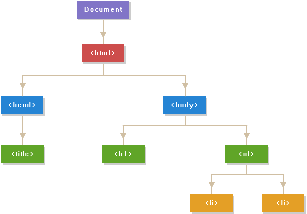
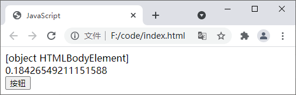

首页 > JavaScript
JS DOM（文档对象模型）
文档对象模型（Document Object Model，简称 DOM），是一种与平台和语言无关的模型，用来表示 HTML 或 XML 文档。文档对象模型中定义了文档的逻辑结构，以及程序访问和操作文档的方式。
当网页加载时，浏览器就会自动创建当前页面的文档对象模型（DOM）。在 DOM 中，文档的所有部分（例如元素、属性、文本等）都会被组织成一个逻辑树结构（类似于族谱），树中每一个分支的终点称为一个节点，每个节点都是一个对象，如下图所示：
借助 DOM 您可以使用 JavaScript 来访问、修改、删除或添加 HTML 文档中的任何内容。
示例代码如下：
当网页加载时，浏览器就会自动创建当前页面的文档对象模型（DOM）。在 DOM 中，文档的所有部分（例如元素、属性、文本等）都会被组织成一个逻辑树结构（类似于族谱），树中每一个分支的终点称为一个节点，每个节点都是一个对象，如下图所示：

图1：DOM 树
图1：DOM 树
借助 DOM 您可以使用 JavaScript 来访问、修改、删除或添加 HTML 文档中的任何内容。
Document 对象
当浏览器加载一个 HTML 文档时，会创建一个 Document 对象，Document 对象是 DOM 树中所有节点的根节点。通过 Document 对象我们可以访问 HTML 文档中的所有元素。提示：Document 对象是 Window 对象的一部分，所以您可以通过 window.document 来访问 Document 对象。
Document 对象中的属性
下表中列举了 Document 对象中提供的属性及其描述：| 属性 | 描述 |
|---|---|
| document.activeElement | 返回当前获取焦点的元素 |
| document.anchors | 返回对文档中所有 Anchor 对象的引用 |
| document.applets | 返回对文档中所有 Applet 对象的引用。注意: HTML5 已不支持 <applet> 元素 |
| document.baseURI | 返回文档的基础 URI |
| document.body | 返回文档的 body 元素 |
| document.cookie | 设置或返回与当前文档有关的所有 cookie |
| document.doctype | 返回与文档相关的文档类型声明 (DTD) |
| document.documentElement | 返回文档的根节点 |
| document.documentMode | 返回浏览器渲染文档的模式 |
| document.documentURI | 设置或返回文档的位置 |
| document.domain | 返回当前文档的域名 |
| document.domConfig | 已废弃，返回 normalizeDocument() 被调用时所使用的配置 |
| document.embeds | 返回文档中所有嵌入内容（embed）的集合 |
| document.forms | 返回文档中所有 Form 对象的引用 |
| document.images | 返回文档中所有 Image 对象的引用 |
| document.implementation | 返回处理该文档的 DOMImplementation 对象 |
| document.inputEncoding | 返回文档的编码方式 |
| document.lastModified | 返回文档的最后修改日期 |
| document.links | 返回对文档中所有 Area 和 Link 对象的引用 |
| document.readyState | 返回文档状态（载入中） |
| document.referrer | 返回载入当前文档的 URL |
| document.scripts | 返回页面中所有脚本的集合 |
| document.strictErrorChecking | 设置或返回是否强制进行错误检查 |
| document.title | 返回当前文档的标题 |
| document.URL | 返回文档的完整 URL |
Document 对象中的方法
下表中列举了 Document 对象中提供的方法及其描述：| 方法 | 描述 |
|---|---|
| document.addEventListener() | 向文档中添加事件 |
| document.adoptNode(node) | 从另外一个文档返回 adapded 节点到当前文档 |
| document.close() | 关闭使用 document.open() 方法打开的输出流，并显示选定的数据 |
| document.createAttribute() | 为指定标签添加一个属性节点 |
| document.createComment() | 创建一个注释节点 |
| document.createDocumentFragment() | 创建空的 DocumentFragment 对象，并返回此对象 |
| document.createElement() | 创建一个元素节点 |
| document.createTextNode() | 创建一个文本节点 |
| document.getElementsByClassName() | 返回文档中所有具有指定类名的元素集合 |
| document.getElementById() | 返回文档中具有指定 id 属性的元素 |
| document.getElementsByName() | 返回具有指定 name 属性的对象集合 |
| document.getElementsByTagName() | 返回具有指定标签名的对象集合 |
| document.importNode() | 把一个节点从另一个文档复制到该文档以便应用 |
| document.normalize() | 删除空文本节点，并合并相邻的文本节点 |
| document.normalizeDocument() | 删除空文本节点，并合并相邻的节点 |
| document.open() | 打开一个流，以收集来自 document.write() 或 document.writeln() 方法的输出 |
| document.querySelector() | 返回文档中具有指定 CSS 选择器的第一个元素 |
| document.querySelectorAll() | 返回文档中具有指定 CSS 选择器的所有元素 |
| document.removeEventListener() | 移除文档中的事件句柄 |
| document.renameNode() | 重命名元素或者属性节点 |
| document.write() | 向文档中写入某些内容 |
| document.writeln() | 等同于 write() 方法，不同的是 writeln() 方法会在末尾输出一个换行符 |
示例代码如下：
document.addEventListener("click", function(){
document.body.innerHTML = document.activeElement;
var box = document.createElement('div');
document.body.appendChild(box);
var att = document.createAttribute('id');
att.value = "myDiv";
document.getElementsByTagName('div')[0].setAttributeNode(att);
document.getElementById("myDiv").innerHTML = Math.random();
var btn = document.createElement("button");
var t = document.createTextNode("按钮");
btn.appendChild(t);
document.body.appendChild(btn);
var att = document.createAttribute('onclick');
att.value = "myfunction()";
document.getElementsByTagName('button')[0].setAttributeNode(att);
});
function myfunction(){
alert(document.title);
}
运行上面的代码，点击页面的空白区域，即可输出如下图所示的内容：

图：Document 对象演示
图：Document 对象演示
关注公众号「站长严长生」，在手机上阅读所有教程，随时随地都能学习。内含一款搜索神器，免费下载全网书籍和视频。

微信扫码关注公众号